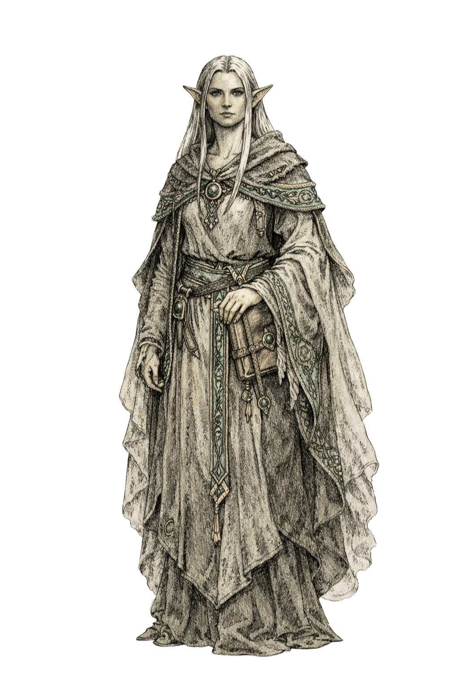

Espécie de Varkhul
Lloviane

Características dos Lloviane
Tipo de Criatura: Humanoide
Idade: Embora os Lloviane atinjam a maturidade física em um ritmo similar ao dos Varsosters, sua percepção cultural da maturidade é muito mais lenta, abrangendo séculos de acúmulo de conhecimento e sensibilidade à Ressonância. Um Lloviane é tipicamente considerado adulto por volta dos 100 anos de idade e pode viver, em média, até os 2.000 anos, sendo a espécie sapiente de vida mais longa documentada no planeta.
Tamanho: Médio (1.2 - 2,1 metros de altura) ou Pequeno (0.6 - 1.2 metros de altura)
Deslocamento: 9m
Encanto da Ressonância: Você
possui uma conexão profunda com a Ressonância, um eco cósmico que o inunda com visões
intrusivas de eventos capazes de alterar o mundo. Sempre que terminar um Descanso Longo, você deve rolar um
d12. Em um resultado de 4 ou menor, você fica incapaz de resistir a essas visões até seu
próximo Descanso Longo. Enquanto
estiver nesse estado, sua mente é protegida pelo estático temporal: sempre que você deve
fazer um teste de resistência de Sabedoria, ou qualquer teste de resistência para
resistir a uma influência mental ou a um efeito de encantamento, você primeiro rola um
d6. Em um resultado de 5 ou 6, o efeito é imediatamente anulado; caso contrário, você
faz o teste de resistência normalmente.
No entanto, essas visões embaçam suas reações físicas, fazendo com que você subtraia 1d4
de todos os testes de resistência de Força e Destreza. Além disso, seu foco fica tão
dividido que o primeiro ataque corpo a corpo feito contra você a cada rodada é feito com
vantagem, enquanto você luta para distinguir os ecos do passado dos perigos do presente.
Ágil e Leve: Você não parece sofrer tanto quanto os outros da gravidade, como se estivesse flutuando. Você tem especialização na perícia acrobacia e não pode ser capturado ou restrito por meios não mágicos enquanto estiver consciente.
Percepção Diplomatica : Sua
mente foi moldada para memória profunda, reconhecimento de padrões e leitura constante
dos sinais sutis do mundo ao seu redor. Você ganha proficiência nas perícias História e Intuição.
Seu sistema auditivo e sensorial aguçado permite que você perceba vibrações de baixa
frequência, mudanças de pressão, tremores quase imperceptíveis e outros estímulos que a
maioria das criaturas ignora. Enquanto estiver sobre uma superfície sólida, você possui
Sentido Sísmico com alcance de 3
metros.
Além disso, você tem vantagem em testes de Intuição feitos para discernir o estado
emocional, a sinceridade ou intenções ocultas de uma criatura por meio da leitura de
microexpressões, postura, respiração e outros sinais fisiológicos.